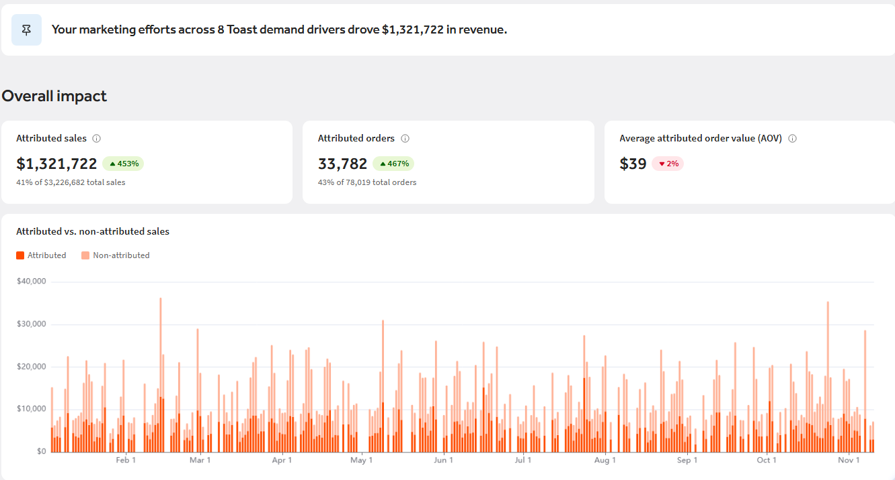
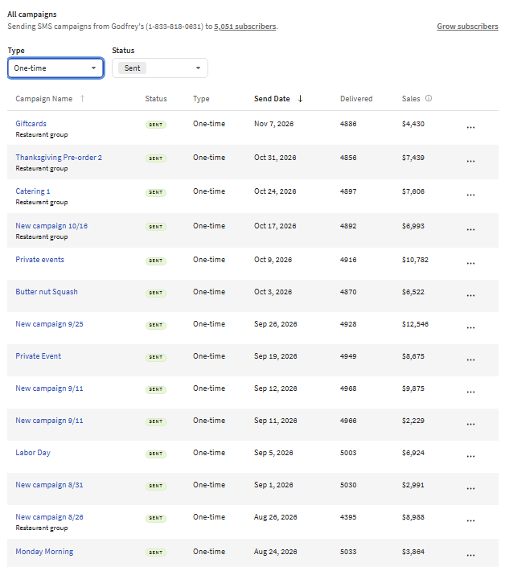
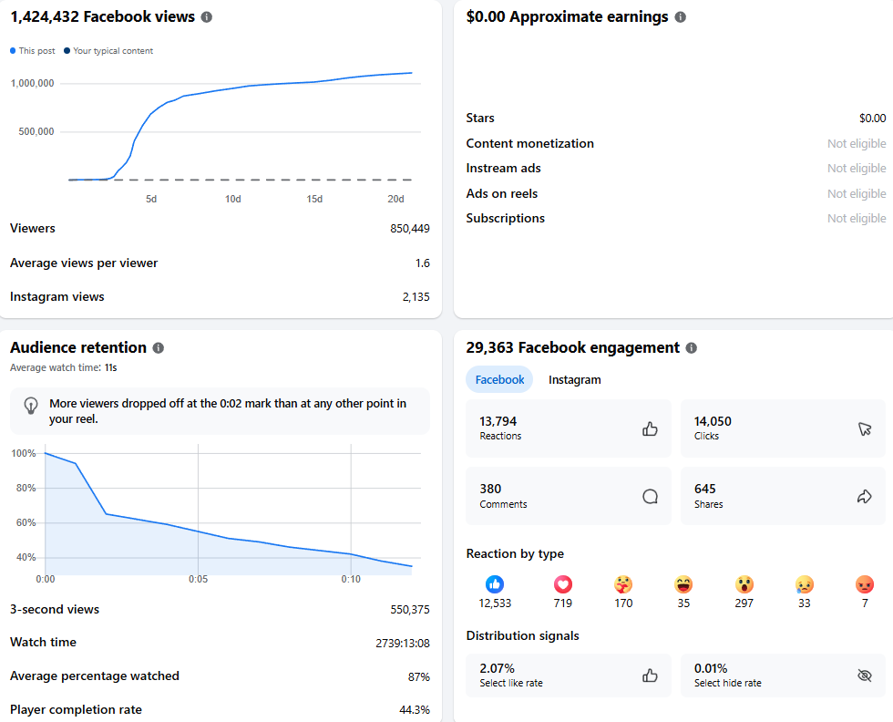
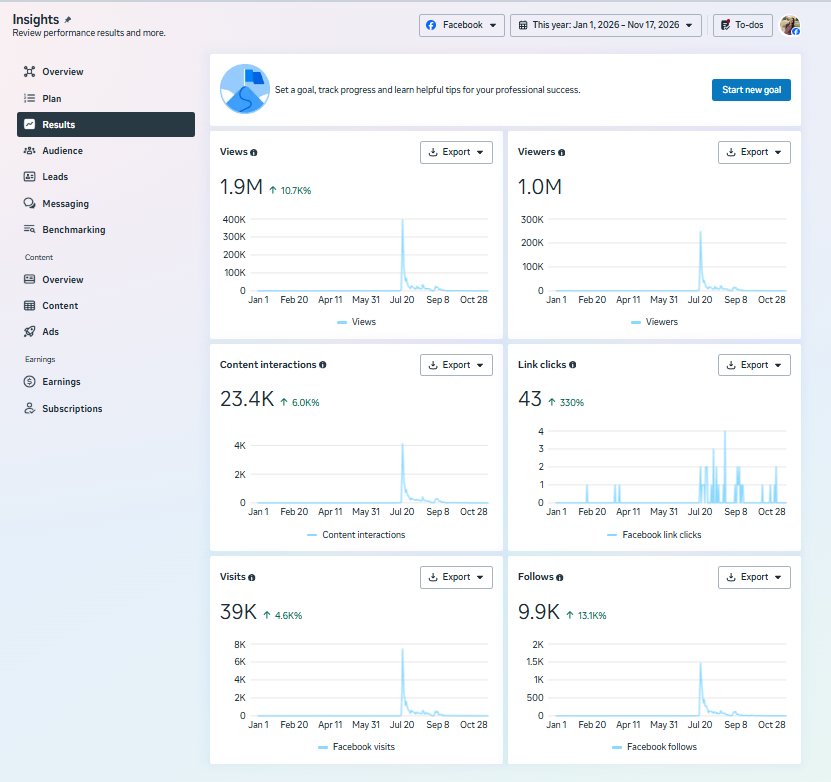
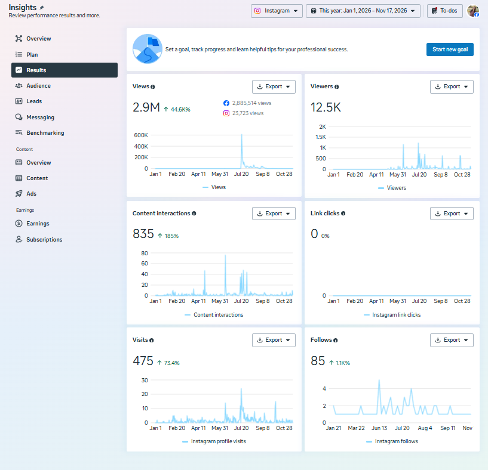

Portfolio
Restaurant marketing results and hands-on business operations.
Campaign results
I managed social media, event coordination, and Toast email and SMS marketing. Select any screenshot to open it at full size.
View results screenshots


$1.32M in attributed sales
Toast reported $1,321,722 across eight marketing demand drivers. The full reporting period is not visible in the screenshot.

1.1M social views
Combined Facebook and Instagram views from November 1, 2025 to November 1, 2026.

$54,024.86 in email sales
Sales reported by Toast Email Marketing for the dashboard’s last 30 days.


$12,546 from one SMS campaign
Sales reported by Toast for the September 26, 2026 campaign. Email and SMS figures are shown as individual channel examples.
Day-to-day business management
I managed sales, social media, communication with organizers, payroll, and team meetings.
Request a discovery call ↗Content performance
Individual post results and account dashboards. Open a screenshot to inspect the platform’s reported metrics.
View results screenshots

200,361 Facebook views
4,111 Facebook engagements, including 101 shares. The post reporting dates are not visible.

136,174 Facebook views
4,098 Facebook engagements, including 140 shares. The post reporting dates are not visible.

181,778 Facebook views
3,994 Facebook engagements, including 253 shares. The post reporting dates are not visible.


1,424,432 Facebook views
29,363 Facebook engagements, including 645 shares. The post reporting dates are not visible.


1.9M Facebook views
Facebook dashboard for January 1–November 17, 2026. It also reports 1.0M viewers, 23.4K content interactions, and 9.9K follows.


2.9M views reported in Meta
The Instagram-selected dashboard for January 1–November 17, 2026 shows a views breakdown of 2,885,514 Facebook views and 23,723 Instagram views.